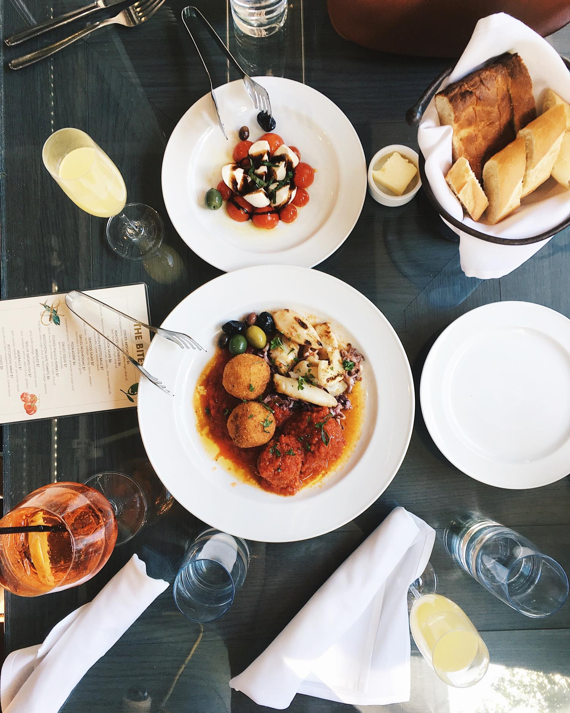
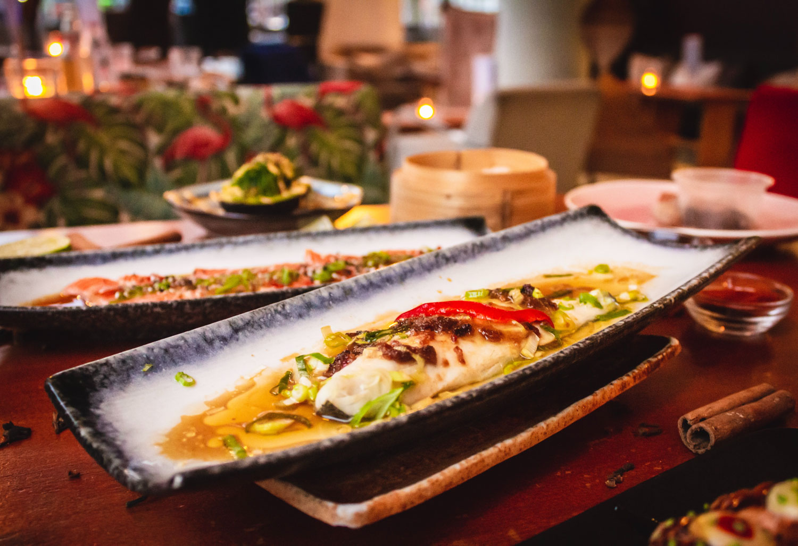

Paris, Belleville
Réserver le menu qui vous convient
Découvrez des restaurants d'exception, sélectionnés par nos soins
Explorer nos restaurants
Fonctionnement
1
Choississez un restaurant
2
Composez votre menu
3
Dégustez au restaurant
Restaurants
La palette du goût
Ménilmontant
Nouveau

La note enchantée
Charonne
Nouveau
À la française
Cité Rouge

Le délice des sens
Folie-Méricourt